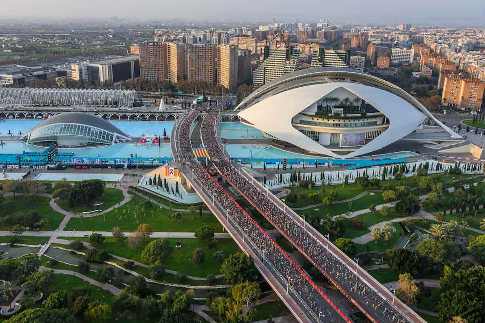
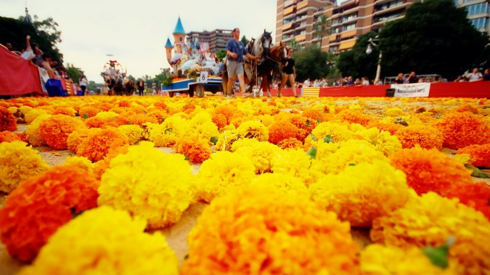

Feel the Energy
Join us in the streets. From the roaring flames of Las Fallas to the exhilarating Valencia Marathon, our city never stops celebrating life.
Featured Events
The most anticipated celebrations of the year

Las Fallas
The ultimate festival of fire and art. Witness gigantic sculptures filling the streets before being burned in an epic nocturnal spectacle.

La Tomatina
Join thousands of people in the nearby town of Buñol for the world's largest food fight, throwing over a hundred metric tons of tomatoes.

Valencia Marathon
Known as "The City of Running," Valencia hosts one of the fastest and highly acclaimed marathons on a completely flat, beautiful course.

Gran Feria (Batalla de Flores)
A spectacular summer fair culminating in the Battle of Flowers, where a million marigolds are thrown in a breathtaking parade.